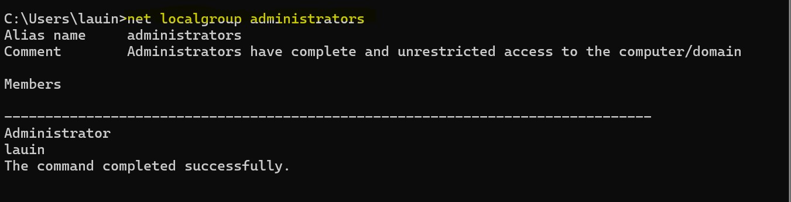

Step-by-Step: Check Windows Firewall
Follow these steps to verify that your Windows Firewall is active.
Step 2: Open Firewall & Network Protection
Select Firewall & network protection.
 Firewall & Network Protection Screen
Firewall & Network Protection Screen
Step 3: Verify Network Profiles
Ensure all profiles show Active / On.
 All firewall profiles enabled
All firewall profiles enabled
Step-by-Step: Check for Windows Updates
Keeping Windows updated ensures the latest security patches are installed.
Step 1: Open Settings
Click the Start Button, type Settings, and open the app.
 Open Settings using the Start Menu
Open Settings using the Start Menu
Step 2: Navigate to Windows Update
Select Windows Update from the left menu.
 Windows Update Screen
Windows Update Screen
Step 3: Check for Updates
Click Check for updates. Updates will install automatically.
 Updates downloading or installing
Updates downloading or installing
Check User Accounts Using Command Prompt (CMD)
Review user accounts and administrator privileges on your system.
Step 1: Open Command Prompt
Open the Start Menu, type cmd, and select Command Prompt.
Opening Command Prompt
Step 2: List Local User Accounts
net user
 Local user accounts listed
Local user accounts listed
Step 3: Check Administrator Accounts
net localgroup administrators

Administrator accounts